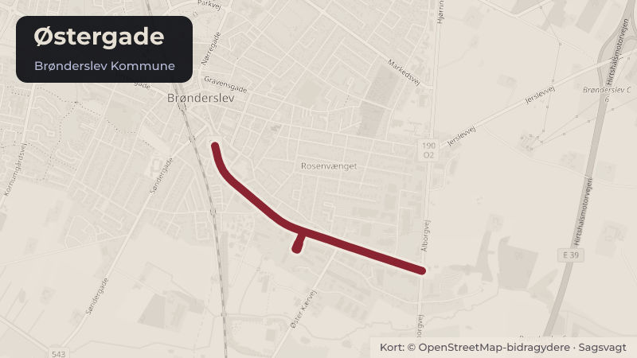

Besluttet 17. august, Teknisk Udvalg, Brønderslev
Tiltrædelse af tilsagn til EU-projekt "Hjertevejen"
Sagsforløb: TU Fagforvaltningen har modtaget tilsagn om 2,05 mio. kr. i støtte fra EU's Regionalfond til projekt Hjertevejen. Projektet har til formål at skabe yderligere forskønnende tiltag på den strækning af Østergade, der ligger tættest på Brønderslev bymidte.
Steder i sagen: Østergade

Kort fortalt
- Hvem
- Teknisk Udvalg, Brønderslev Kommune
- Hvornår
- Mandag 17. august 2026
- Status
- Besluttet. Punkt 1 til 2 godkendt. Punkt 3 ikke godkendt.
Læs hele sagen Kommunens egen tekst
Sagsfremstilling
På baggrund af et politisk ønske om at styrke udviklingen af handelsbyernes bymidter, har
fagforvaltningen søgt Erhvervsstyrelsen om støtte til projektet Hjertevejen under puljen til fysisk
udvikling af handelsbyernes bymidter, som er finansieret af EU's Regionalfond.
Projekt Hjertevejen tog udgangspunkt i et samarbejde med Brønderslev Erhverv om at søge
midler til en ansættelse af en bylivsudvikler via puljen "Fysisk omstilling til levende og
bæredygtige bymidter", der hører under EU's Regionalfond. Den del af ansøgningen, der
vedrørte bylivsudvikleren blev dog afvist, med henvisning til, at den ansøgte pulje var til fysiske
tiltag. Forvaltningen valgte efterfølgende, i dialog med Erhvervsstyrelsen, at ændre
ansøgningen til et rent fysisk projekt, hvor projektsummen hovedsageligt er anlægsmidler.
Fagforvaltningen ser en tydelig sammenhæng mellem denne indsats og omdannelsen af
Østergade, der udgør den primære adgangsvej til Brønderslevs bymidte. Formålet med
projektet er derfor at tiltrække ekstern finansiering til forskønnende tiltag på den del af
strækningen, der ligger tættest på bymidten og dermed styrke mulighederne for at gennemføre
attraktive bymiljøforbedringer i tilknytning til den planlagte omdannelse af Østergade.
Projekt Hjertevejen
Projekt Hjertevejen skal bidrage til at styrke Brønderslevs bymidte ved at skabe mere attraktive
og indbydende forbindelser til handelsgaderne. Projektet omfatter de primære adgangsveje til
bymidten, herunder strækningerne Østergade, Vestergade og Ny Banegårdsplads. Navnet
Hjertevejen skal derfor forstås som mere inviterende veje og forbindelser, der fører ind til
Brønderslevs hjerte; bymidten.
Projektet har fokus på forskønnelse, begrønning og forbedring af forholdene for de bløde
trafikanter. Samtidig skal løsningerne understøtte klimatilpasning og bæredygtighed som en
integreret del af projektets gennemførelse.
Økonomi
Projektets samlede budget er på 5,13 mio. kr. Betingelserne for tilsagnet bygger på en 40/60model. Erhvervsstyrelsen har meddelt tilsagn om et tilskud på 2,05 mio. kr., svarende til 40 %
af projektets samlede budget på 5,13 mio. kr. De resterende 3,08 mio. kr. (60 %) skal
finansieres af Brønderslev Kommune. Projektet skal være afsluttet senest ved udgangen af
Projekt Hjertevejen overlapper delvist med etape 4 af omdannelsen af Østergade og
projekterne understøtter derfor hinanden.
Fagforvaltningen gør opmærksom på, at tilskuddet til Hjertevejen ikke kan erstatte
finansieringen af etape 4.
I den eksisterende bevilling til omdannelse af Østergade er der primært afsat midler til de
nødvendige trafikale anlæg, herunder vejombygning og cykelsti. Fagforvaltningen bemærker,
at der ikke er afsat særskilte midler til den kommunale medfinansiering. Selvom projektet
delvist omfatter samme strækning som etape 4 af Østergadeprojektet, vurderes mulighederne
for at samfinansiere projekterne at være begrænsede. En gennemførelse af projekt Hjertevejen
vil derfor kræve, at der afsættes yderligere kommunale midler.
Hjertevejen giver derimod mulighed for at tilføre yderligere kvaliteter i form af forskønnelse,
begrønning og bymiljøforbedringer, som ligger ud over de tiltag, der finansieres i
Østergadeprojektet.
Erhvervsstyrelsen har anmodet om, at kommunen senest den 2. september 2026 melder
tilbage, hvorvidt tilsagnet tiltrædes, og kommunen dermed løfter den nødvendige
medfinansiering.
Fagforvaltningen gør opmærksom på, at deltagelse i et EU-støttet projekt indebærer
omfattende krav til projektstyring, dokumentation og opfyldelse af målsætninger inden for
bæredygtighed og klimatilpasning. Kravene omfatter bl.a. deltagelse i fysiske samlinger med
andre kommuner, der har fået tilsagn vi puljen, løbende afrapportering til Erhvervsstyrelsen og
ekstern revision af projektøkonomien. Fagforvaltningen ser det muligt at imødekomme disse
krav.
Personalemæssige konsekvenser
Ingen.
Økonomi og finansiering
Økonomi bemærker, at der samlet set er et budget på 3,7 mio. kr. vedr. "Midtbyplaner", som
endnu ikke er prioriteret. Heraf er 3,0 mio. kr. fra budgetvedtagelsen for 2026 og de 0,7 mio. kr.
er overførte midler fra tidligere år. De 3,7 mio. kr. er alle frigivet ifm. budgetvedtagelserne.
Indstilling
Fagforvaltningen for Klima, Teknik og Kultur indstiller, at Teknisk Udvalg beslutter
1. om tilsagnet om EU-støtte på 2,05 mio. kr. kan accepteres, og
2. om den kommunale medfinansiering på i alt 3,08 mio. kr. kan løftes, eller
3. tilsagnet til EU-støtte afslås, hvormed projektet ikke gennemføres.
Beslutning
Punkt 1 til 2 godkendt.
Punkt 3 ikke godkendt.
Kilde: Brønderslev Kommune, Teknisk Udvalg, referat fra mødet mandag 17. august 2026, punkt 6. Læs den originale sag hos kommunen.